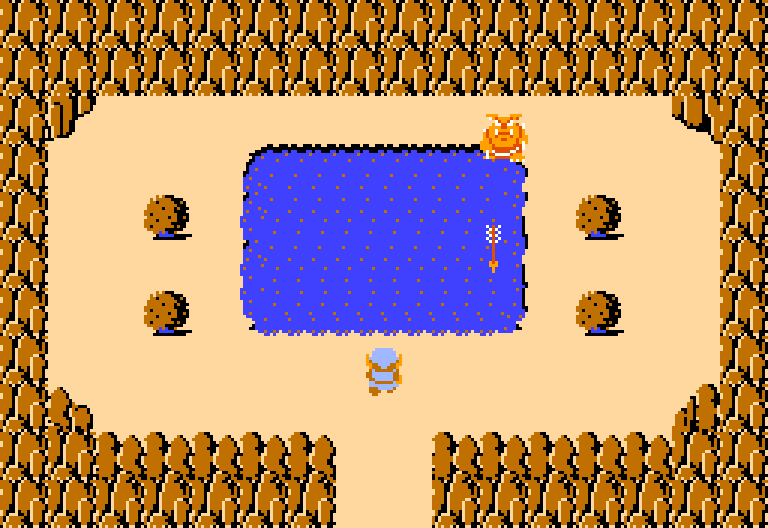
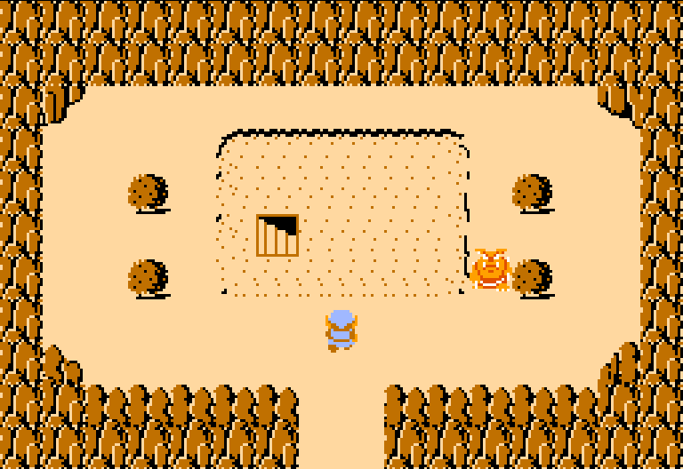
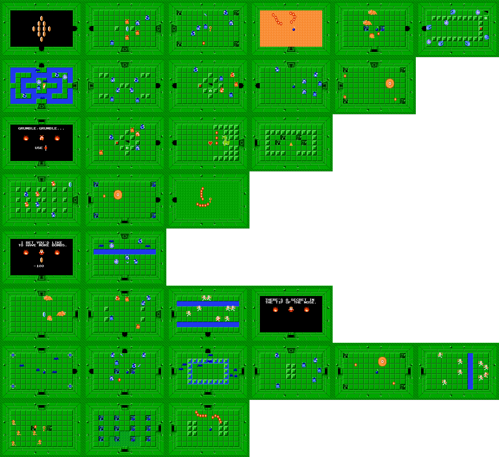
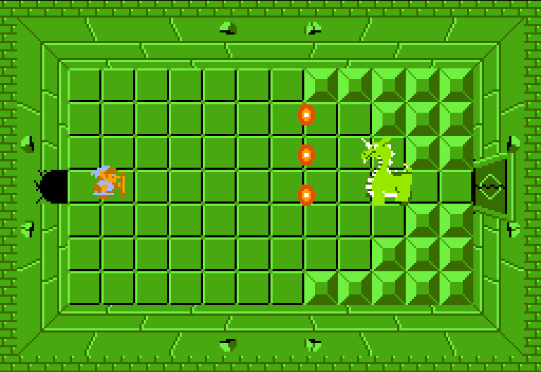

Location and How to Get There
This level is found hidden in a lake.
You need to use the whistle found in level 5 to enter it.
When you play your whistle next to the lake, it will get drained, uncovering the entrance to the level.
{kind=link}

{kind=link}

The Layout
It is shaped like the head of a demon.
You could say it looks like the head of any reptile, but they went with demon officially.
Similiar to level 6, this level is huge, even larger.
{kind=link}

Key Items
{kind=link}
The Boss, Aquamentus
The exact same boss as Level 1.
Very easy and underwhelming at this point in the game.
{kind=link}

Difficulty
7/10 This level isn't that difficult, it just has some inconveniences.
The layout is huge, the enemies aren't that difficult, there's a hidden passage you need to find.
There is also an enemy here called the Goriya, who you have to feed a Monster Food item.
The only way to obtain it, is to buy it from a shop in the overworld for either 60 or 100 rupees.
If you don't feed it, it won't let you pass.
My Rating
9/10. A very good level in my opinion.
The difficulty drop compared to the previous level is nice.
I really like the dark green color scheme mixed with water.
Besides level 5 this level has a hidden bomb upgrade too, allowing you to carry up to 16 bombs from now on, very nice!